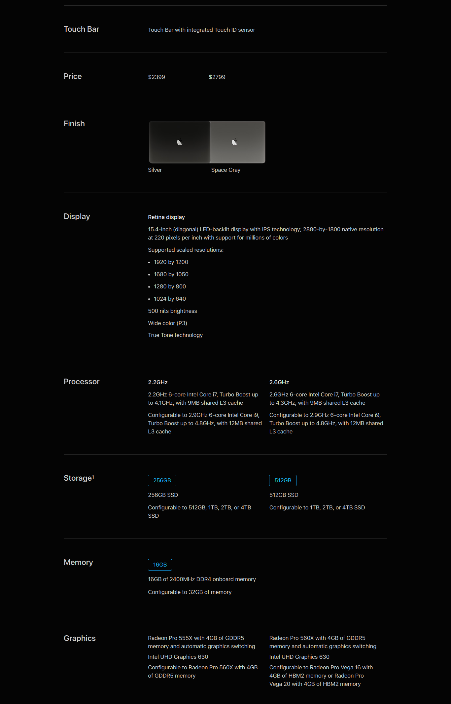

With eighth-generation Intel Core processors, MacBook Pro reaches new heights in compute performance. The 15‑inch model now features a 6‑core Intel Core i9 processor that works up to 70 percent faster than the previous generation, enabling up to 4.8GHz Turbo Boost speeds. And a quad‑core processor on the 13‑inch MacBook Pro with Touch Bar now makes it up to twice as fast as the previous generation. So when you’re powering through pro‑level processing jobs like compiling code, rendering 3D models, adding special effects, layering multiple tracks, or encoding video, you’ll get everything done. Faster.
